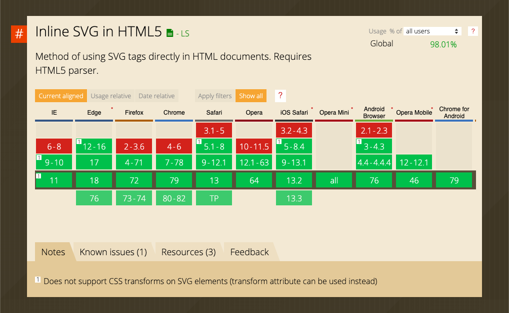
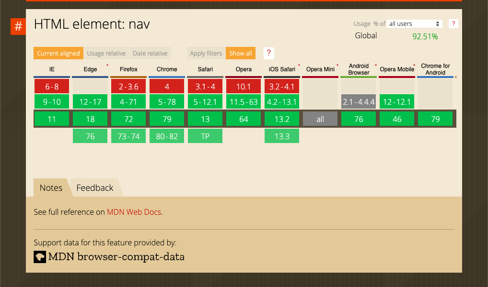
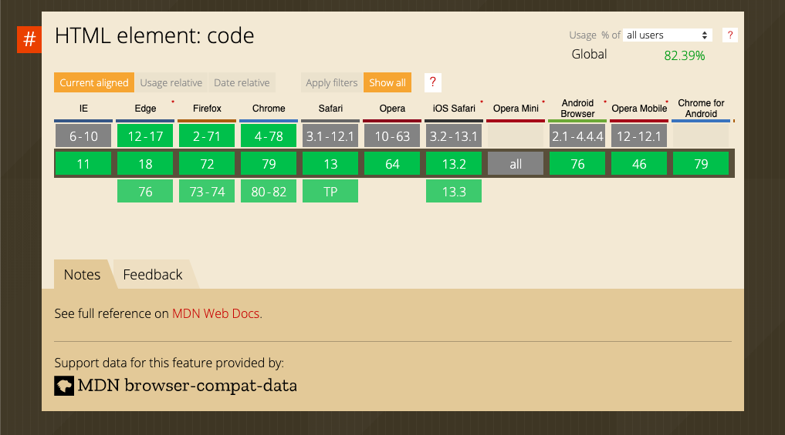
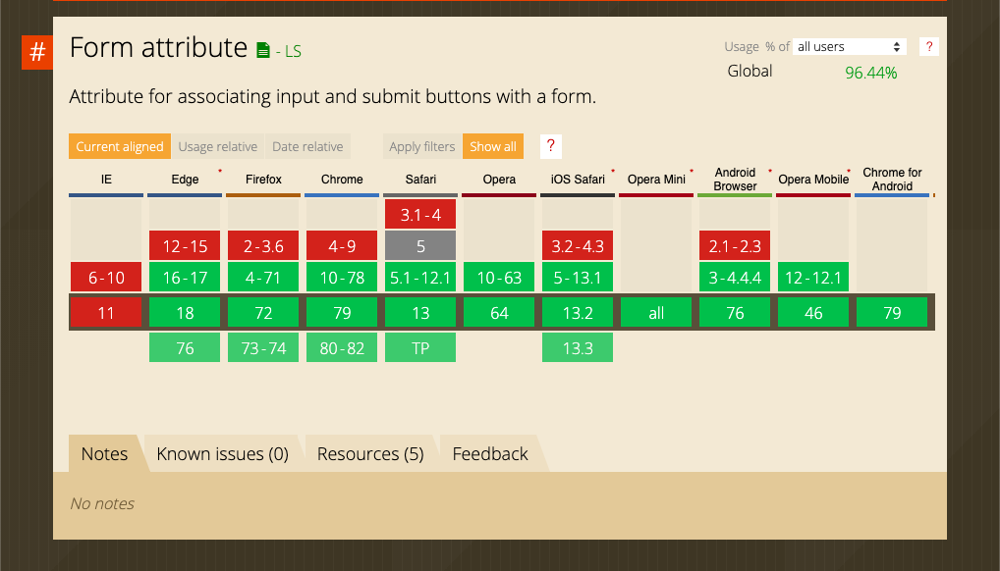
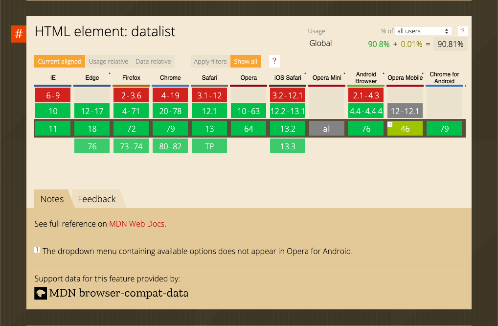

How do I see the differences between HTML and CSS?
-
What is the difference between the usage of
HTML and CSS?
HTML is the structure and backbone of the website, whereas CSS is how the website is presented.
-
What is the newest version of HTML?
HTML 5
-
What are the top five most used HTML5 elements?
If not sure, make a guess.
-
<p> -
<h1> -
<div> -
<a> -
<img>
-
-
Have you checked out this
HTML5 cheatsheet?
Yes.
-
What is the difference between
semantic and non-semantic elements?
Semantic elements (header, footer, article, etc) are better for accesibility on a webpage then div or a span or something very general.
-
Why do we prefer using semantic elements?
It is more specific and a better HTML practice in general but also makes the web more accesible IE: If someone is using a reader, it will tell them what part of the website they are on
-
Do all all of the newest browsers support HTML / CSS
elements?
Yes.
-
Test the following elements on
Can I Use:
svg,nav,code,form,datalist.My answer, in screenshots:
    
More Questions
- Why should you care about how your code is formatted?
- How many spaces should you indent at a time?
- Should the code be lowercase or uppercase? What is the recommended encoding?
- How should you use comment to explain your code? How do you do it in HTML and in CSS?
- How do you validate your HTML?
- What is the purpose of the alt attribute?
- Should you separate structure (markup), presentation (styling), and behavior (scripting)? If yes, why?
- Should you use double or single quotation marks around attribute values?
- How can you validate your CSS code?
- When would you use meaningful ID/class names? When would you use generic ones?
Because if we use the general and standard practices, our code will not only be easier for us to write coherently and uniformly but it will be the same with others across the board when we are commiting to a larger project and someone is reading it.
2
The recommended code is lowercase with the exception of strings.
You use comments to write a "secret" note that will not be viewed or
seen except within the code. I use a shortcut to enable block comment
<!-- comment here-->
but there is also the line comment //
You can use a validator like: W3C HTML validator to test you page.
It is important for accesibility. If a blind person uses their reader to access your site, you can provide an alt to give them a description of the image. It will also load in case your photo does not.
Yes. It is easier to maintain seperate sheets of code.
Double.
You can use a validator like: W3C CSS validator to test you page.
They should reflect the purpose of why you are using them (least likely to change and most likely to be understood). Generic names "the probability of unnecessary document or template changes." -google.github.io
Keyboard Shortcuts
- How do you quickly switch between different windows on your operating system? What is the shortcut?
- How do you move the insertion point to the beginning of the document / to the end of the document?
- How do you move the insertion point to the beginning of the current line / to the end of the current line?
- How do you select the text between your cursor and the end of the current line?
- How to open settings in any app?
- How do you refresh a page?
- How do you refresh a page while emptying a cache? Why would you want to do this?
command + tab
command + up arrow key or command + down arrow key.
command + left arrow key or command + right arrow key.
shift + left/right/up/down arrow keys.
command + comma key.
command + R.
command + R + shift. It can help pages load faster.